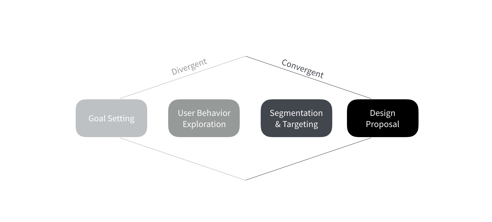
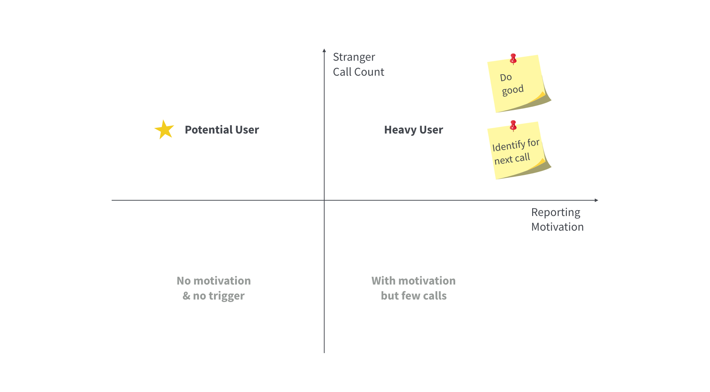
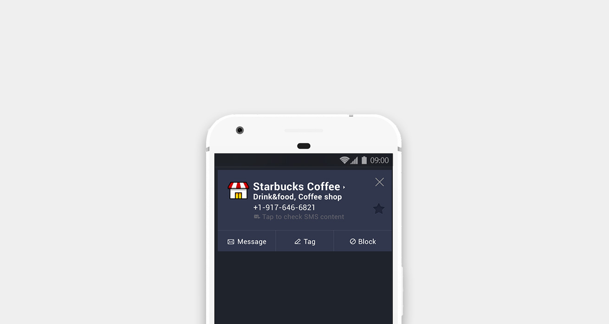
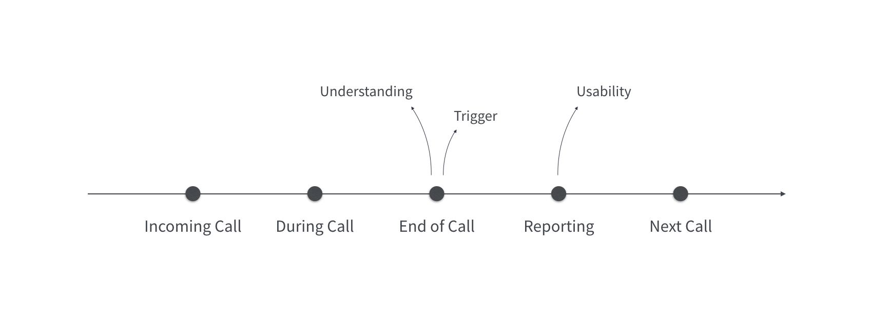
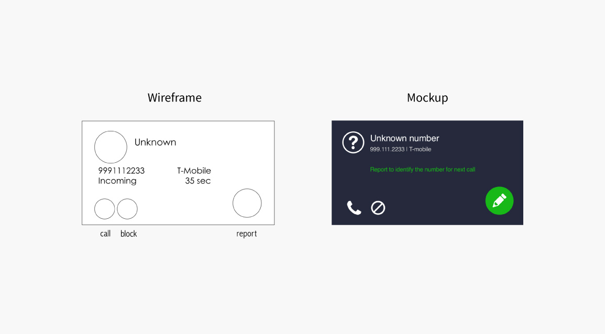
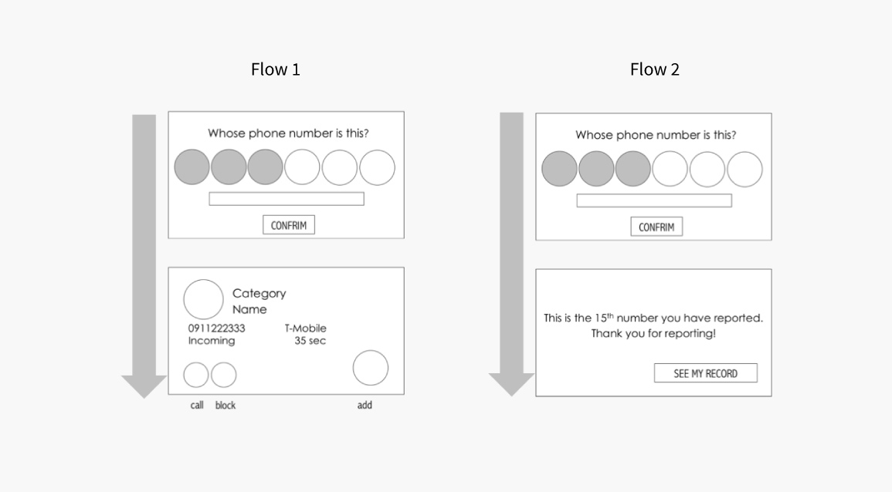
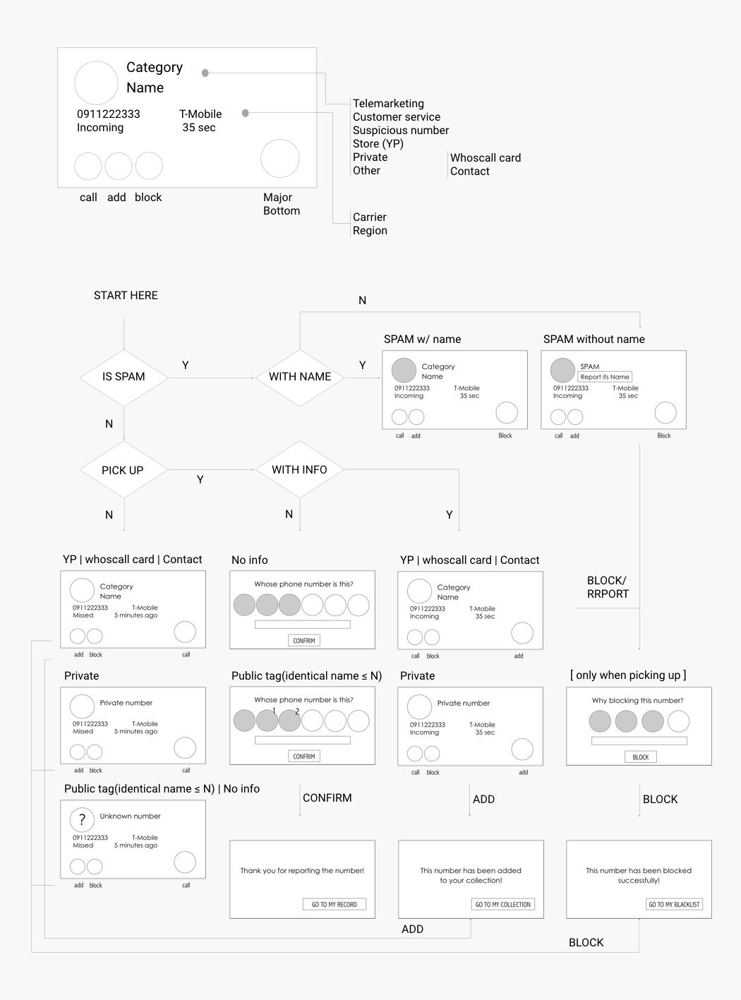
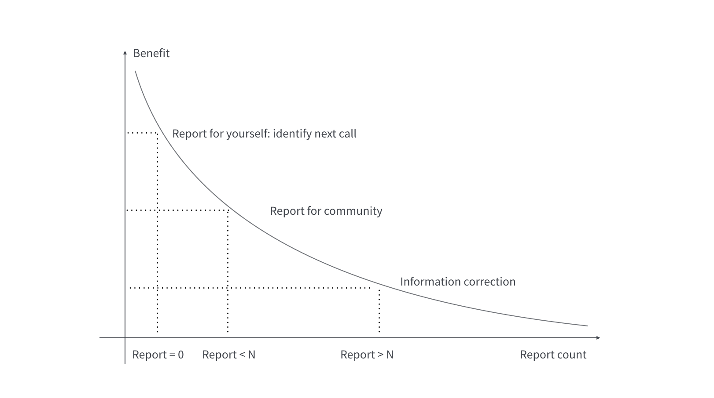
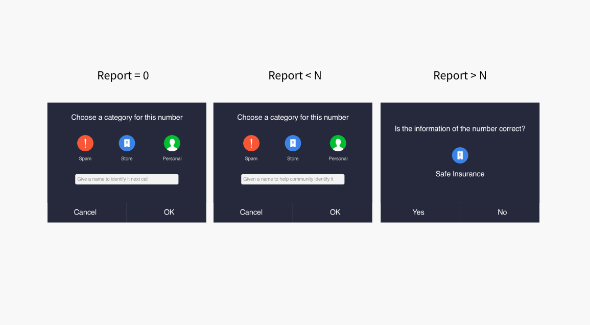

Design Process
Who should I design for?
In Taiwan, nearly 80% of Android phone users are Whoscall users. Since it is not practical to try to make a design that satisfies everyone, the first thing that I wanted to figure out is to determine the target audience of the redesign.

In order to find out who I should design for, I segmented all users according to 2 criteria:
- Stranger calls that aren’t from contacts they have made or received last month
- Reporting motivation measured by the number of reports they have made last month
From my interviews with heavy users, I concluded 2 major reasons why they reported a lot:
- Users report to do good and feedback to the community
- Users report to identify the number for himself/herself
Why don't users report?
In addition to interviewing users who report a lot, I as well interviewed users who don't report at all to learn about their opinions of the original dialog as above. Walking through the user journey with them, I concluded 3 main issues of the feature:
Understanding - Users don't report because they don't understand what the report feature is
When the call ends, I just want to turn off the window. I don't want to spend the time to figure out what each button means.
Trigger - Users don't report because they don't see the benefits of doing it
I don't really know what "tag" is... Is it like tagging someone on Facebook? But why do I need to tag a number?
Usability - Users don't report because it requires lots of efforts to do
After clicking "tag", it requires me to input the name of the number. But I don't want to spend time keying in.
First Iteration
In order to generate more user reports, my design concept is to make potential users who receive lots of stranger calls but don't report become heavy users who report a lot.
Emphasize the most important action button based on the scenario and reveal the benefit of reporting a number with a caption describing it.
After shipping out the first iteration, the report rate was increased by a small and not significant percentage. I refelcted - is there a better way to emphasize the most important action button based on the scenario?
Second Iteration
Instead of providing the button of reporting, I decided to replace the original dialog of information of the call with the reporting dialog so that users don't have to figure out what the "tag" / "report" button means. I came up with 2 different flows of what would happen after a user does report.
Flow 1: After reporting, provide original dialogue with information about the call and other action buttons.
Flow 2: After reporting, provide a feedback message and an entrance to the user's report record.
After looking into data of the click-through rate of the action buttons, I confirmed my hypothesis that there is a main action according to the scenario of the call in that users mostly clicked on the main action button instead of others. What's more, Flow 2 provides an entrance for users to enter and to engage with the app. So I decided to go with Flow 2.
Wireframe and Flow
While currently all users see the same report dialogue at the end of a call, I think it is better to provide dynamic dialogues based on the report count of a number and reduce the efforts of reporting based on the benefits to users.

Design Concept

Report = 0: When we have no data of a number, we can encourage users to report for themselves so that they can identify the caller next time it calls.
Report < N: When we have a few reports but it hasn't reached the threshold so the name is not displayed, we can encourage users to report for the community.
Report > N: When the report count has reached the threshold, we only ask users to verify the information instead of asking them to input a name.
Outcome
The redesign was put into practice with the help of our visual designer. The user flow was significantly changed. Before the redesign, the same dialog of the information of the call with several action buttons will be presented to a user once the call ends. After the redesign, different dialog with the most suitable action button will be presented to a user. For the case of the numbers without information, the report dialog will be presented directly.
The average time that a user spends on reporting a number was decreased by 54%.
The conversion rate of a successful report was increase by 6%.
The bounce rate of the report dialog was decreased by 25%.
The project was not ended here. The design of the call dialog of Whoscall is continuously iterating. The concept of reporting category wasn't fulfilled when I was in charge of the project in the summer of 2014 because it required great efforts of reorganizing our database. However, I shipped the category reporting feature in the spring of 2017. We are still learning about how to crowdsource more effectively.